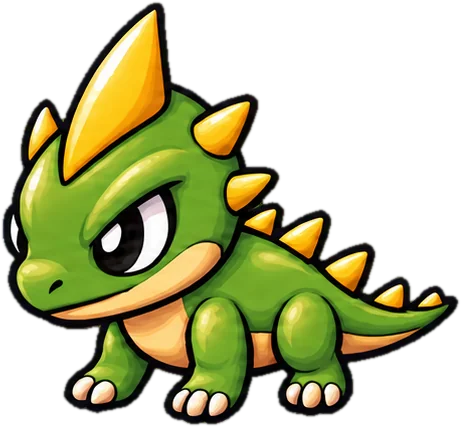

 GrassRock
GrassRockTap a stage to read its story.
Verdlet is a small four-legged dinosaur with bright green scaly skin, a broad rounded head, and a row of yellow spikes running down its back and over its skull. It moves in quick confident bursts, tail held up, and snuffles along the ground of the Dark Forest with its blunt snout, nosing aside leaf litter to find seeds lodged in the soil. The yellow spikes on its head can stand erect when it is startled, making it look twice as large - an effective trick against the forest's shadow-creatures.
Field note: Verdlet's back spikes stand straight up when it is frightened; they relax flat again only after five full minutes of calm.
Dark Forest. Verdlet and its family are found in the Dark Forest. See everyone who lives there.
Share a Bond Food that matches its types to become friends. Verdlet loves:
A Bond Food is not a trick. It joins your spirit with the Kimuro's spirit, and only when it chooses you.
Print the Kimuro adventure packs: mazes, cards, a board game and Bond Mark medals.
See the printable packs